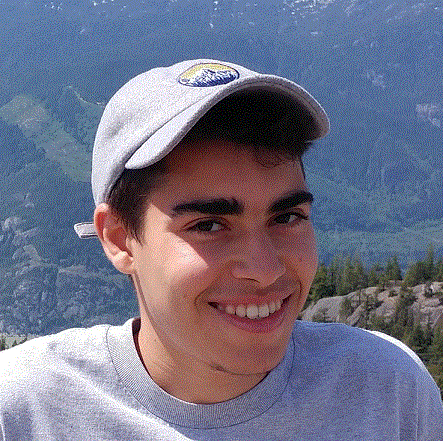
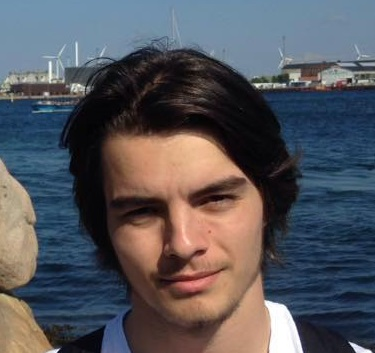

À propos
Malgré de nombreux obstacles et ajournements, Callogero's ouvre enfin ses portes en 2010 dans le quartier de La Petite Patrie, à Montréal. À l'époque des étudiants à l'UdeM, les 2 fondateurs étaient et sont toujours avant tout des passionés de la cuisine italienne. Voici des photos des 2 fondateurs Mohamed et Guilhem respectivement.
  Callogero's offre une ambiance très agréable qui convient autant le public agé que le public jeune.
Nous avons aussi accès à une terrasse extérieure que l'on ouvre pendant l'été.
Notre site est crée de manière très simple. Nous avons veillé à utiliser un bon schéma de couleurs et à maintenir un
fort contraste entre le texte et l'arrière plan afin que la lecture soit facile. L'arrière plan est composé de couleurs
sombres proches du marron, tandis que le premier plan est sur un fond blanc, ce qui les distingue.
De même, nous avons opté pour une police commune et avons bien organisé nos menus avec des listes, pour bien pouvoir les comprendre.